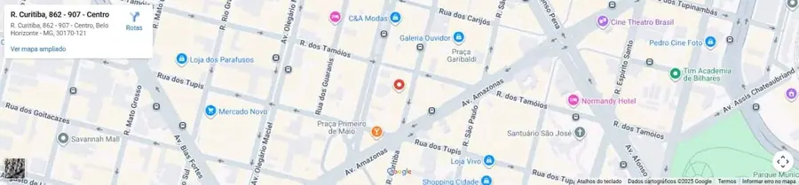
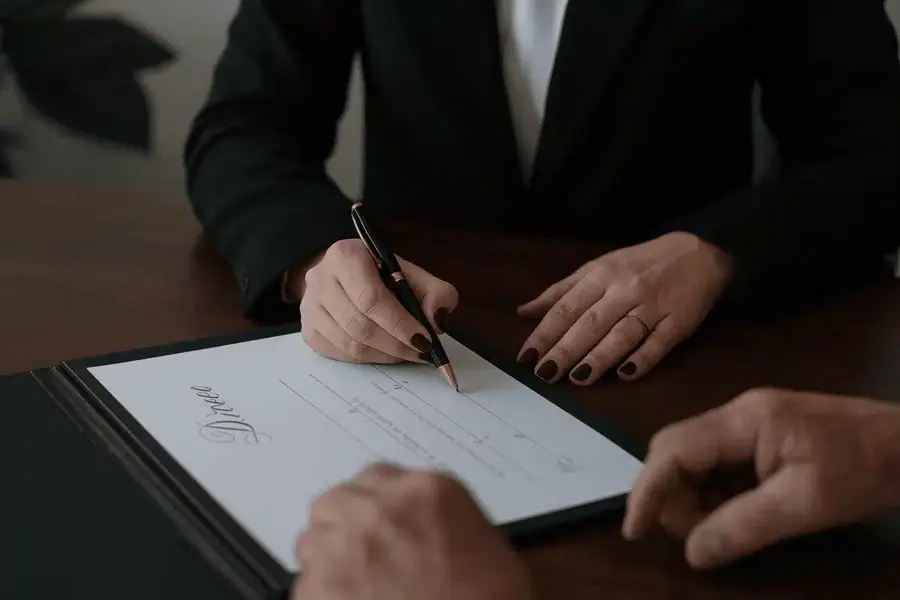

Paleta de cores
Medida no navegador: fundos ponderados pela área ocupada, textos pela quantidade de caracteres. Destaques reúnem cores saturadas e fundos de botão.
Fundos
#435D51
Fundo · 38.3%
rgb(67, 93, 81)
rgb(67, 93, 81)
#FFFFFF
Fundo · 30.0%
rgb(255, 255, 255)
rgb(255, 255, 255)
#E9E9E9
Fundo · 29.2%
rgb(233, 233, 233)
rgb(233, 233, 233)
#9BAE88
Fundo · 1.6%
rgb(155, 174, 136)
rgb(155, 174, 136)
#FF6E00
Fundo · 0.7%
rgb(255, 110, 0)
rgb(255, 110, 0)
#EB6500
Fundo · 0.0%
rgb(235, 101, 0)
rgb(235, 101, 0)
Textos
#303841
Texto · 55.6%
rgb(48, 56, 65)
rgb(48, 56, 65)
#FFFFFF
Texto · 27.8%
rgb(255, 255, 255)
rgb(255, 255, 255)
#9BAE88
Texto · 9.3%
rgb(155, 174, 136)
rgb(155, 174, 136)
#365F4B
Texto · 6.7%
rgb(54, 95, 75)
rgb(54, 95, 75)
#FF5722
Texto · 0.3%
rgb(255, 87, 34)
rgb(255, 87, 34)
#FF6E00
Texto · 0.2%
rgb(255, 110, 0)
rgb(255, 110, 0)
Destaques
#9BAE88
Destaque
rgb(155, 174, 136)
rgb(155, 174, 136)
#FF6E00
Destaque
rgb(255, 110, 0)
rgb(255, 110, 0)
#EB6500
Destaque
rgb(235, 101, 0)
rgb(235, 101, 0)
#365F4B
Destaque
rgb(54, 95, 75)
rgb(54, 95, 75)
Gradientes
linear-gradient(90deg, rgb(155, 174, 136) 0%, rgb(155, 174, 136) 100%)Tipografia
DM Sans · Aa Bb Cc 0123
81% do texto · Se a sua cabeça não desliga, esta página é para você.Urbanist · Aa Bb Cc 0123
19% do texto · Se a sua cabeça não desliga, esta página é para você.Escala usada (desktop 1440px)
| Tamanho | Peso | Família | Amostra |
|---|---|---|---|
| 58px | 700 | Urbanist | Texto de exemplo |
| 55px | 700 | Urbanist | Texto de exemplo |
| 50px | 700 | Urbanist | Texto de exemplo |
| 45px | 700 | Urbanist | Texto de exemplo |
| 40px | 700 | Urbanist | Texto de exemplo |
| 38px | 700 | Urbanist | Texto de exemplo |
| 32px | 700 | Urbanist | Texto de exemplo |
| 26px | 400 | DM Sans | Texto de exemplo |
| 26px | 600 | Urbanist | Texto de exemplo |
| 24px | 700 | Urbanist | Texto de exemplo |
Mobile (390px): 40px/700, 38px/700, 35px/700, 32px/700, 30px/700, 26px/400, 24px/700, 21px/400 · H1 no mobile: sem h1 semântico
Tags
| Tag | Família | Tamanho | Peso | Altura de linha | Espaçamento | Caixa | Cor |
|---|---|---|---|---|---|---|---|
| <h1> | Urbanist | 55px | 700 | 65px | -0.5px | none | #FFFFFF |
| <h2> | Urbanist | 45px | 700 | 50px | normal | none | #365F4B |
| <h3> | Urbanist | 32px | 700 | 40px | 0.25px | none | #FFFFFF |
| <p> | DM Sans | 17px | 400 | 28px | 0.5px | none | #303841 |
Botões
Recriados com os estilos computados reais. Efeitos de hover e animação não aparecem aqui; veja a seção de animações.
FALE CONOSCO AGORA
fundo #FF6E00 · texto #FFFFFF · raio 0px · padding 20px 40px · 16px/800 none · 7x na páginaSAIBA MAIS
fundo #9BAE88 · texto #FFFFFF · raio 0px · padding 15px 30px · 15px/700 none · 6x na páginaLeia mais
fundo #9BAE88 · texto #FFFFFF · raio 0px · padding 9px 33px · 16px/500 none · 3x na páginaWhatsappp
fundo #00000000 · texto #9BAE88 · raio 0px · padding 0px 0px · 26px/600 none · 1x na páginaEnviar
fundo #EB6500 · texto #FFFFFF · raio 0px · padding 12px 72px · 15px/700 none · 1x na páginaCards e containers
Card (3x)
1 set Autoexclusão em Bets: Casa de Apostas Não Bloqueou Sua Conta? Entenda Seus Direitos
raio 0px · sombra rgba(0, 0, 0, 0.08) 0px 0px 10px 0px · borda 0px none rgb(48, 56, 65) · 353x546pxBordas, raios e sombras
2px
Sombras
rgba(0, 0, 0, 0.25) 0px 10px 50px 0pxrgba(0, 0, 0, 0.08) 0px 0px 10px 0pxrgba(0, 0, 0, 0.3) 0px 0px 10px 0pxrgba(0, 0, 0, 0.5) 0px 0px 10px 0pxEspaçamentos
- Largura do conteúdo mais comum: 1140px
- Padding vertical das seções (topo/base): 0px/0px (7x), 100px/100px (4x), 150px/250px (2x)
- Gaps mais usados (flex/grid): 20px, 10px, 15px, 12px, 5px, 0px 20px
- Altura total da página: 11620px em 17 seções
Estrutura e ritmo de cores das seções
Cada faixa é uma seção de topo, com altura proporcional e a cor ou imagem de fundo real.
1. hero Advogado em Belo Horizonte 803px · padding 150px/250px
2. servicos 20+ anos de atuação jurídica comprovada 224px · padding 0px/0px
3. Luciana Delpino 855px · padding 80px/150px
4. servicos Áreas de atuação 1876px · padding 0px/0px
5. Um escritório de advocacia em Belo Horizonte que cuida de pe 800px · padding 100px/100px
6. Principais queixas que atendemos 753px · padding 100px/100px
7. sobre Quem é a advogada Luciana Delpino? 1112px · padding 150px/250px
8. prova-social Depoimentos de clientes 508px · padding 100px/100px
9. sobre Por que escolher a Luciana Delpino Sociedade de Advogados? 909px · padding 100px/150px
10. sobre Advogado em Belo Horizonte 764px · padding 150px/150px
11. blog Blog (Dicas e informações) 981px · padding 0px/0px
12. faq Perguntas frequentes (FAQ) 634px · padding 100px/100px
13. 20px · padding 0px/0px
14. 20px · padding 0px/0px
15. cta-final Fale Conosco 646px · padding 0px/0px
16. localizacao Endereço 558px · padding 15px/0px
17. rodape 61px · padding 0px/0px
Animações, ícones e bibliotecas
- Keyframes próprios: AboundBottom, AboundLeft, AboundRight, AboundTop, Beat, BlurIn, BlurInBottom, BlurInLeft, BlurInRight, BlurInTop, BlurOut, BlurOutBottom, BlurOutLeft, BlurOutRight, BlurOutTop, BounceFromDown, BounceFromTop, BounceY, BounceZoomIn, BounceZoomOut, DoorCloseLeft, DoorCloseRight, DoorOpenLeft, DoorOpenRight, ElevateLeft, ElevateRight, FadeIn, FadeInBottom, FadeInLeft, FadeInRight, FadeInTop, FadeOut, FadeOutBottom, FadeOutLeft, FadeOutRight, FadeOutTop, FlipInBottom, FlipInTop, FlipOutBottom, FlipOutTop
- Animações de entrada do Elementor: bounceIn, fadeIn, fadeInLeft, fadeInRight, fadeInUp, zoomIn
- Classes de scroll reveal da casa: nenhuma
- Ícones: 12 SVG, 20 ícones de fonte
- Bibliotecas e tags detectadas: ga4, gtm, jquery, lottie, swiper
Snippets da biblioteca presentes nesta página
- Nenhum snippet da biblioteca identificado.
Imagens do site

